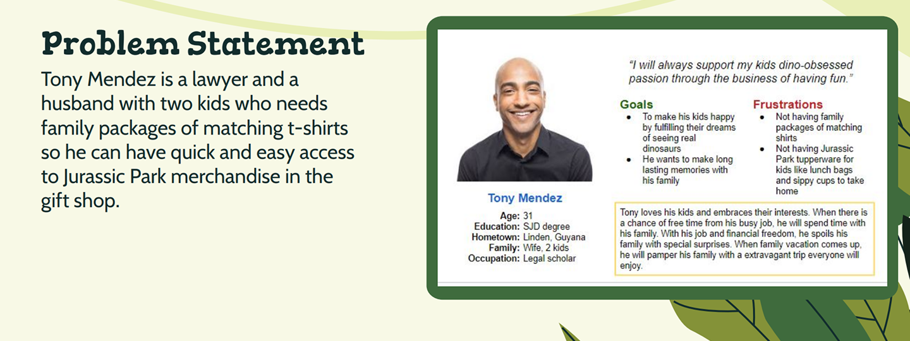

UX RESEARCH | UX DESIGN | KEY TAKEAWAYS

OVERVIEW: Hired by Jurassic Park to create an accessible app for users to purchase merchandise.
ROLE:UX Researcher, UX/UI designer
TOOLKIT:Figma, Pencil and paper
I conducted user research primarily through a survey to see what users would like to see about Jurassic Park Merchandise. Secondary research was conducted by observing competitors. By observing competitor’s websites I concluded pain points and accessible elements about the website. I created a user persona to represent a user process navigating through my app. I developed problem statements from issues a user might have. I would figure out solutions in my app that will solve these issues.
I looked at competitor app layouts and utilized elements that I wanted in my own app. I liked having the Jurassic Park logo at the center of the navigation bar. The navigation bar will have a hamburger menu, search icon, location icon, and a profile icon. I liked the idea of having a large Jurassic Park image on the homepage with a CTA button to quickly guide the user to their desired objective.
There are multiple user flows to get to the merchandise page. The merchandise page has a sorting option for the items. The user has the option to look at the entire catalog or filter it to their specific needs.
I blurred the background so it can be easier to read. I replaced the light green colors with white to make the icons more visible. I also added a translation option to the homepage instead of adding the option in the hamburger menu because the hamburger menu might not be commonly recognized worldwide.
Translation of the 12 major languages of the world.
Contrast for people with low vision. I found that I needed to use bright colors on my background to make it more visible to all users.
The typeface I included in my app is a sans serif font. Sans serif is an easier font to read for all users which is ideal for my user flow.
The most important component when creating this app was to ensure accessibility for all. People from underrepresented populations have equal access to the app. The contrast, typeface, iconography, is inclusive for the visitors of Jurassic Park.
Create more accessibility options. I would include an ALT text option along with a color blind mode.
Have multiple user flows. Every user has a different thought process. Therefore, it would be more accessible for all users to have different options.
More usability testing would give me a better understanding of my audience. having more of those studies conducted would make my work have a clear objective.